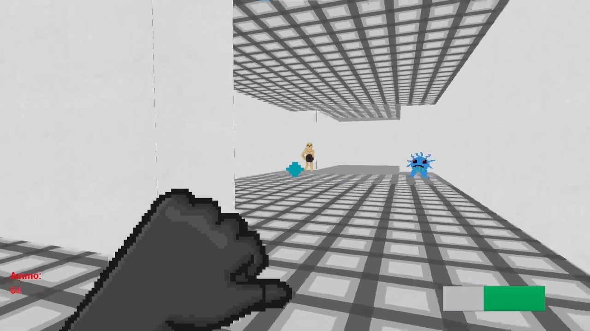
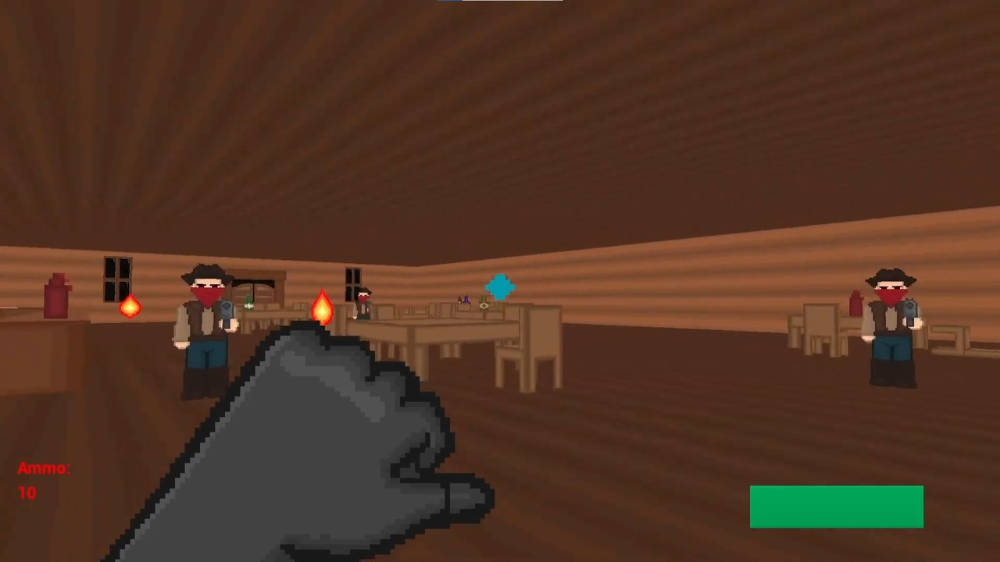
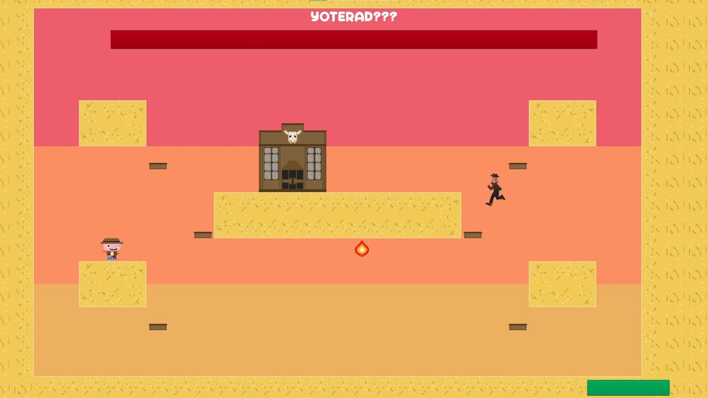
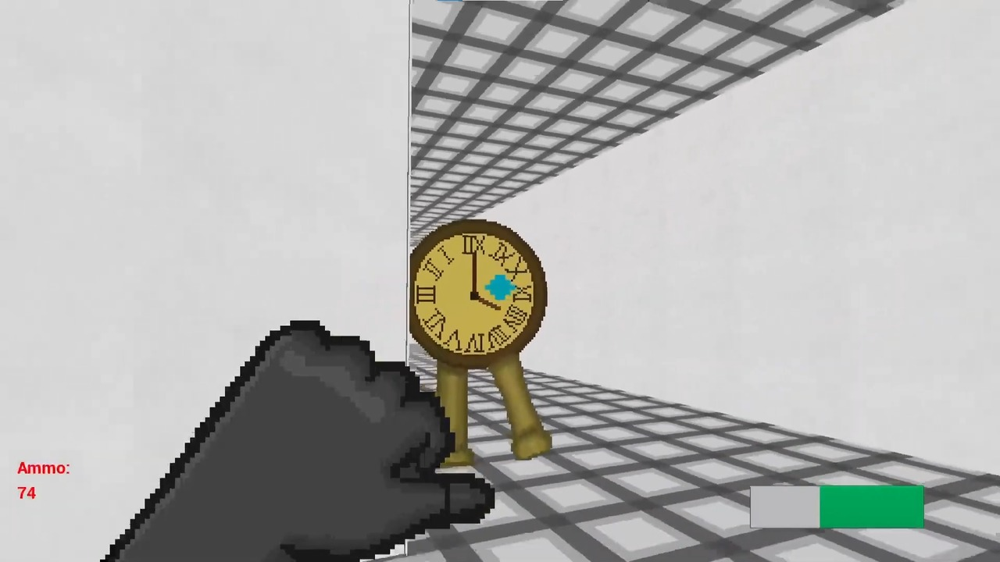
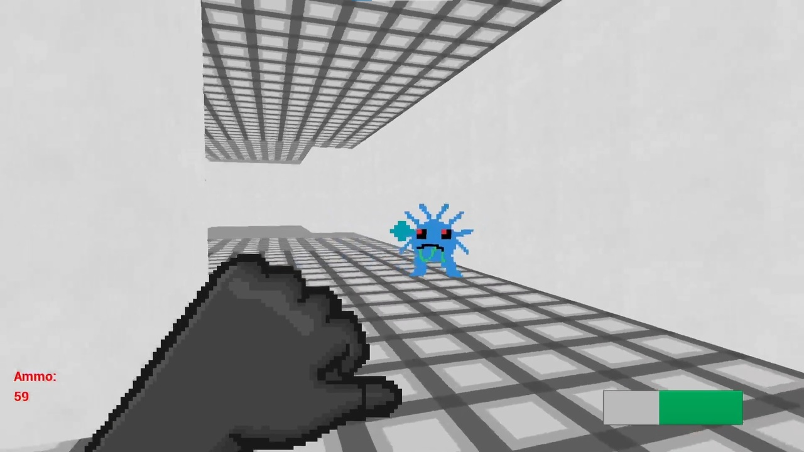
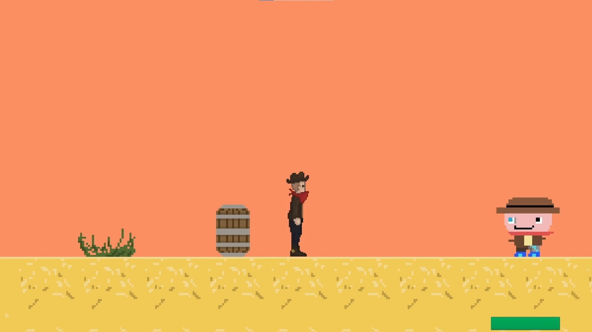

Made as part of a 2 person group for my final project of my Games Design course at South Staffordshire College. Yoterad 2: It's About Time is a sequel to Yoterad, the first game I ever made.
My role during this project was designer, I did all of the in-engine development, system designs, level designs, music creation and mechanic creation utilising Unreal Engine 4 Blueprints. I worked with an artist to create this project.
You play as Yoterad, a space cowboy on a quest to save his horse. He must travel across time and different dimensions to reach his goal, but not everything goes to plan.
The main game loop consists of first person shooting and movement abilities.
The game consists of 3 levels: A tavern tutorial, a lab level with a time-travel mechanic inspired by the Titanfall 2 campaign mission "Effect and Cause" and a final boss 2D platformer level.
Yoterad 2 also features a 2D boss fight level, as part of the multiverse travelling story the player travels back to the universe of the first Yoterad game, where you fight the original version of yourself.
Key Design Decisions:
- Each weapon has an ammo count, but no reloading mechanic. This creates a feeling similar to a retro shooter such as the original DOOM, which accompanies the art style.
- The player has access to a dash function, which allows for more skill expression within the game and helps with avoiding attacks.
- The game features multiple different types of enemies, including a melee, a ranged and a 'bomb' enemy. This encourages the player to tackle each of them differently.





